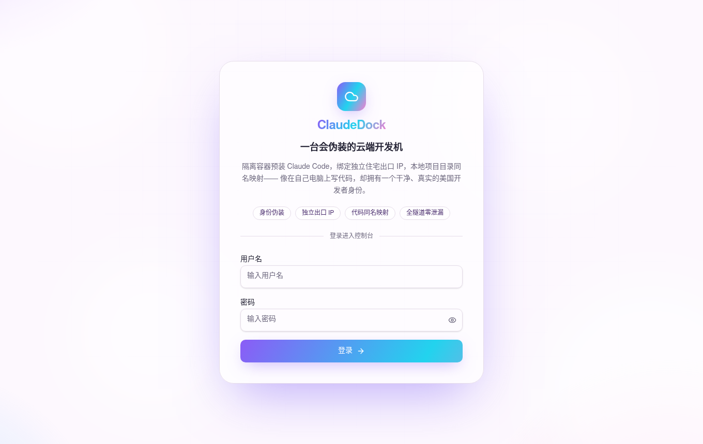
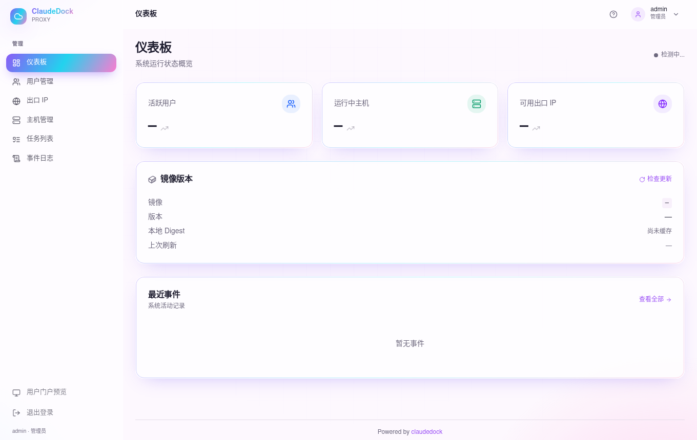
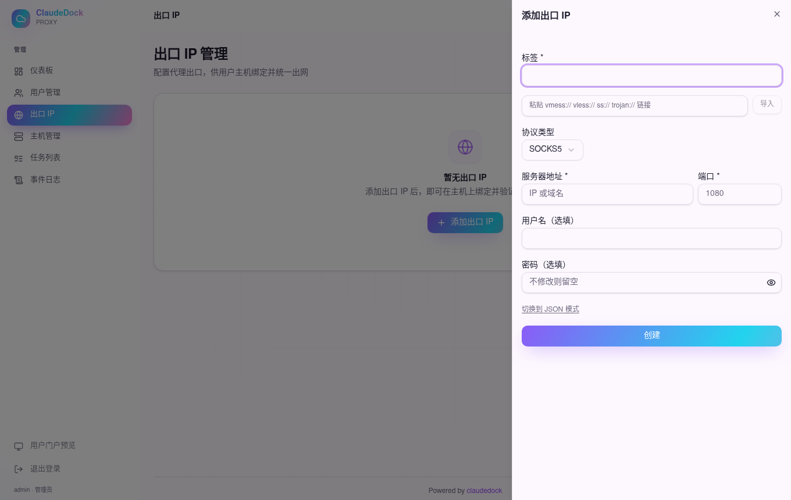
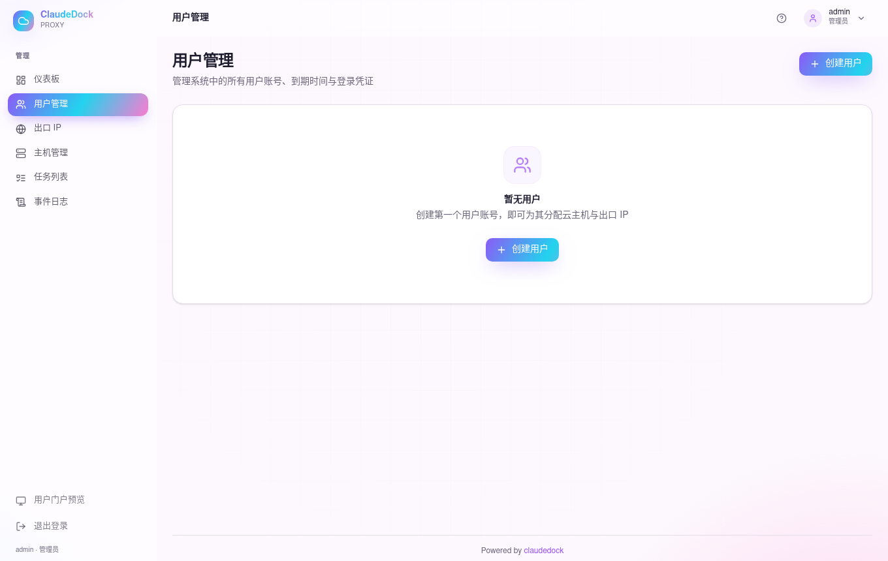
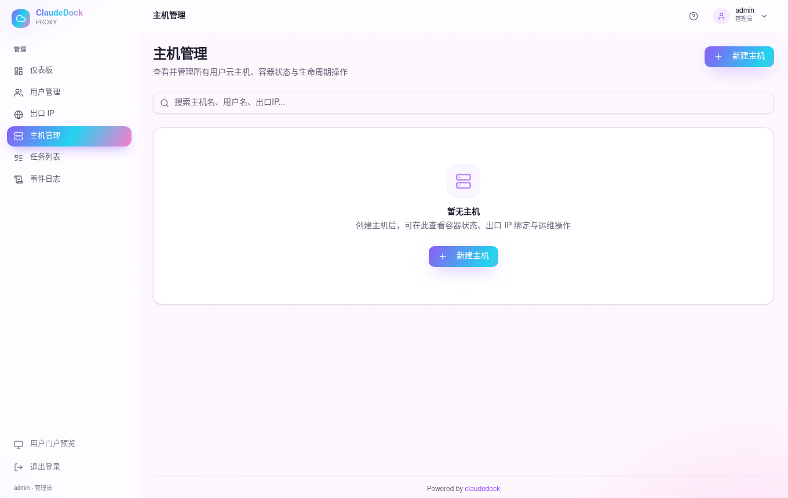

0登录后台
启动软件后（Mac 双击 启动ClaudeDock.command；详见命令版第 1 节），浏览器打开后台地址，用管理员账号登录。
- 打开 http://localhost:8080（端口以启动窗口为准，可能是 8082）。
- 用户名填 admin，密码是项目根
.env里的 ADMIN_PASSWORD。 - 点 登录，进入管理后台。

1认识界面
进来是仪表板。左侧是导航，本教程会依次用到：出口 IP → 用户管理 → 主机管理。

左侧导航含：仪表板、用户管理、出口 IP、主机管理、任务列表、事件日志；底部有「用户门户预览」和「退出登录」。
2添加出口 IP（住宅代理）
这是主机对外上网用的出口。先把你的住宅代理加进来。
- 左侧点 出口 IP → 页面右侧点 ＋ 添加出口 IP。
- 右侧弹出表单。最快方式：把
vmess:// / vless:// / ss:// / trojan://链接粘进顶部输入框，点 导入，字段自动填好。 - 或手动填：标签（随便起名，如 us-home-01）、协议类型（如 SOCKS5）、服务器地址、端口、用户名 / 密码（住宅代理给的）。
- 点 创建。
- 创建后在列表里点该条的 连通性测试，确认「连通 / 出口 IP 匹配 / 无 DNS 泄漏」三项通过。

出口 IP 建议用真实家宽住宅 IP（机房 IP 段易被风控标记）。你之前买的 ISP 静态住宅代理正好填这里。
3创建用户
给要用云主机的人建一个账号。
- 左侧点 用户管理 → 右上点 创建用户。
- 填 用户名、初始密码，可选设 过期时间（到期自动停机）。
- 点 创建。用户后续可被暂停、轮换密码。

4创建主机并绑定出口 IP
主机 = 一台带 Claude Code 的隔离容器。建好并绑上出口 IP 才能启动。
- 左侧点 主机管理 → 右上点 新建主机。
- 选择归属用户（第 3 步建的），创建。
- 在主机上绑定出口 IP（第 2 步加的那个）。至少绑一个才能正常启动。
- 等待任务状态变为「容器已就绪」。可在任务列表 / 事件日志看进度（后台实时推送）。

5把接入命令发给用户
主机就绪后，进「主机详情」页复制接入命令交付给用户。
- 点进该主机的详情页。
- 复制页面上的接入命令（形如
curl -sSf http://YOUR_HOST/entry/SHORT_ID | bash）。 - 把命令连同登录密码发给用户。用户在终端跑一下、输密码，就会自动 SSH 进容器，输入
claude即可开写。
用户当前所在目录会以同名路径挂进容器；断线重跑同一命令即可恢复。用户侧更详细的用法见「命令版」第 3 节。
6进阶操作（都在后台点）
- 远程桌面：主机详情页一键打开容器内 Chromium 桌面（KasmVNC）。
- Bypass 防火墙：给某些域名 / CIDR / 端口开白名单直连，支持 预览 应用 回滚 快照。
- 主机生命周期：启动 / 停止 / 重建（保留或清空
/workspace）/ 删除。重建保留 home 数据。 - 用户运维：暂停、设过期自动停机、轮换密码。
- 审计：所有操作写入事件日志，可追溯。
Mac 的 Docker Desktop 上「创建真实主机 / 隧道」可能不完整（依赖 Linux 宿主特性）。要完整功能请把软件部署到 Linux 服务器。